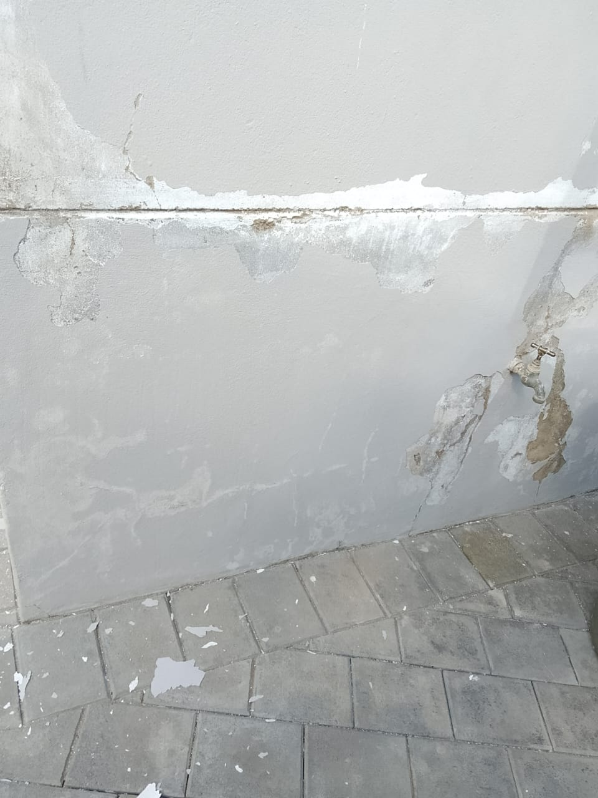
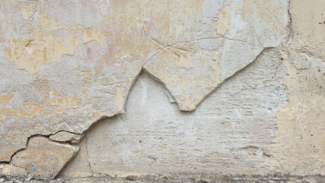
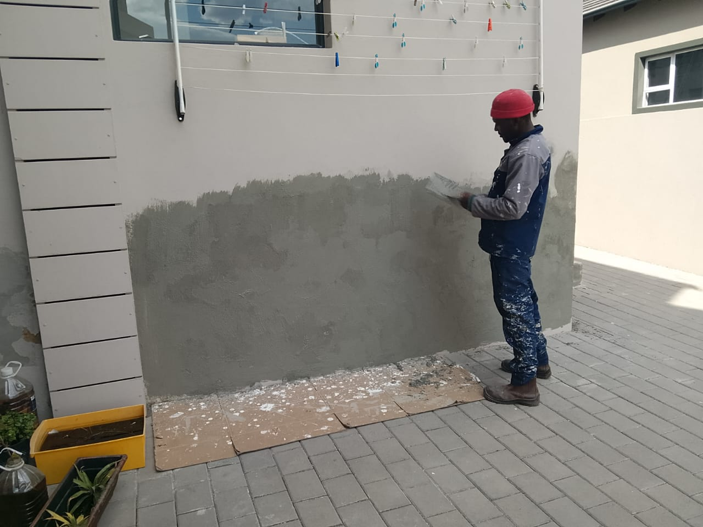
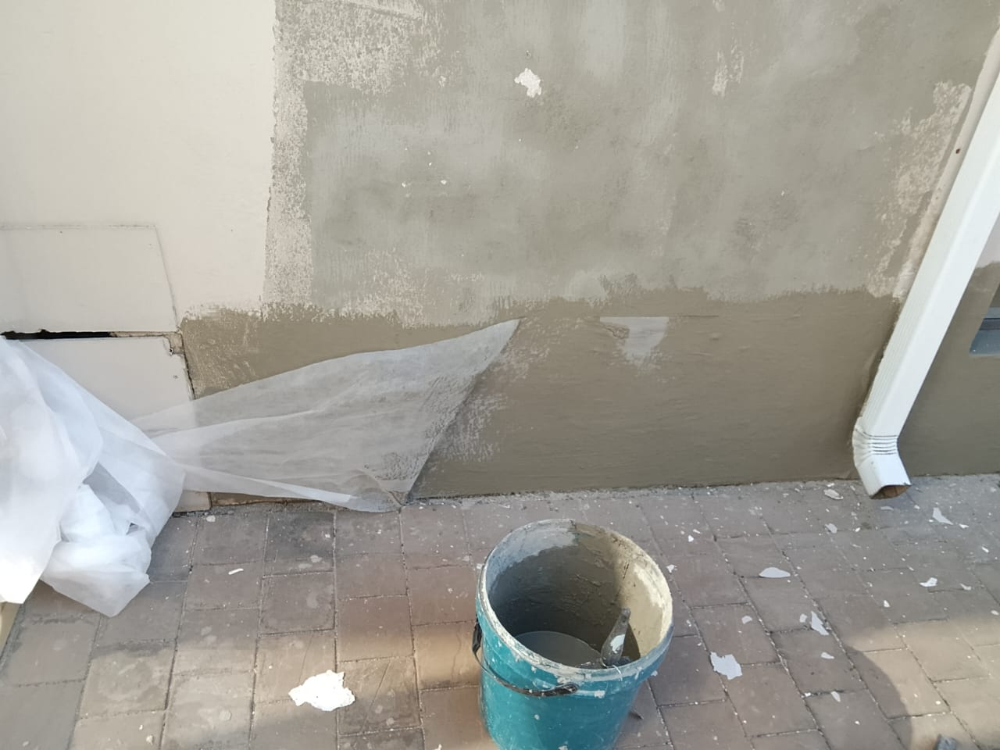
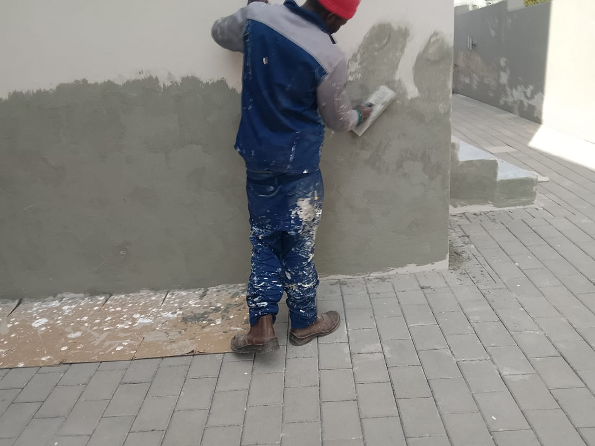
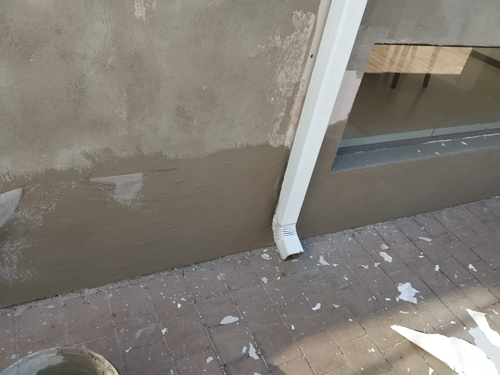

At Jay Paintworks, we understand that cracks and
spalling can compromise the integrity and appearance of
your walls. Our expert crack repair services are designed to
restore your walls to their original condition, ensuring durability
and a flawless finish. Whether you're dealing with minor surface cracks
or more significant structural issues, our skilled team is equipped to handle
all types of crack repairs.
Our crack repair services include:
Comprehensive Inspection: We begin with a thorough assessment of the affected areas to identify the extent of the damage and determine the best repair approach.
Surface Preparation: Our team meticulously prepares the surface by cleaning and removing any loose debris to ensure optimal adhesion of repair materials.
Crack Filling: We use high-quality fillers and sealants to effectively fill and seal cracks, preventing further deterioration and moisture infiltration.
Spalling Repair: For areas affected by spalling, we remove damaged material and apply specialized repair compounds to restore the surface's integrity.
Finishing Touches: After repairs are complete, we sand and smooth the surface to ensure a seamless finish, ready for painting or other treatments.
Trust Jay Paintworks for reliable and professional crack repair services that enhance the longevity and appearance of your walls. Contact us today for a free consultation and let us help you restore your walls to their best condition.






Frequently Asked Questions
What types of paint do you use?
We use high-quality paints from reputable brands to ensure a durable and beautiful finish. The type of paint used depends on the surface and location (interior or exterior).
How long does a typical painting project take?
The duration of a painting project varies based on the size and complexity of the job. We provide an estimated timeline during the consultation phase.
Do you offer free estimates?
Yes, we offer free estimates for all our painting services. Contact us to schedule a consultation.
What areas do you serve?
We serve various locations. Please contact us to find out if we cover your area.
How many coats of paint do I need to change the colour of a wall?
Actual number of coats depends on the quality of paint as well as color shades you're switching to and from but expect atleast two coats to change color, especially when switching between light and dark shades or using vibrant colors. For a significant change, like dark to light, or when using high-pigment colors such as bright red, yellow, or orange, a third coat may be necessary to ensure complete coverage and a uniform finish.
A significant color change requires a second coat to completely cover the old color and prevent it from showing through.
Using a primer before painting can help reduce the number of coats needed, especially when making drastic color changes. Primers create a uniform base that enhances paint adhesion and coverage.